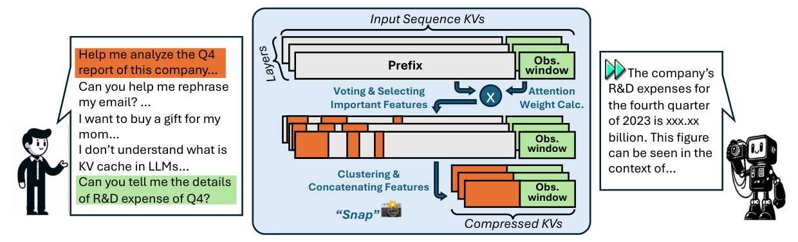

二、国内外研究现状
□ 视觉模态方法：原生 GUI 智能体（GUI Agent）与高效视觉推理（Efficient Inference）
视觉

UI-TARS-2：原生 GUI 智能体 + 多轮强化学习 [Seed, 2025]

FastV：视觉 token 剪枝 [Chen+, ECCV 24]

SnapKV：KV 缓存压缩 [Li+, NeurIPS 24]
视觉模态通用但昂贵：需要面向 GUI 结构的高效感知方法，并与文本模态互补使用
优点：以截图与键鼠为通用接口，可操作任意软件并观测交互反馈；OSWorld 成功率两年内由 12% 升至 80% 以上
不足：截图累积致开销高、步数多，且无法感知隐藏状态；通用 token 剪枝与 KV 压缩未利用 GUI 的帧间冗余与二维布局